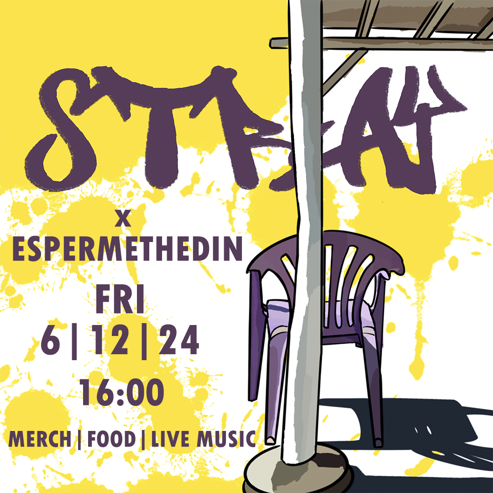

Άλλο ένα όμορφο τριήμερο του Σεπτέμβρη έλαβε τέλος! Γεμάτ@ χαρά, συγκίνηση και γλυκές στιγμές ελπίζουμε και περιμένουμε το επόμενο!

Το Stray επιστρέφει με μια μικρή χειμωνιάτικη γιορτή, γεμάτη μουσική, χαμόγελα και όμορφη διάθεση!
Η πρώτη μέρα του Stray Art Festival πλησιάζει! Εδώ μπορείτε να δείτε αναλυτικά το πρόγραμμα των δρώμενων.
Φέτος το Stray Art Festival από τον Γαλησσά της Σύρου μεταφέρεται στην περιοχή των Λαζαρέτων.